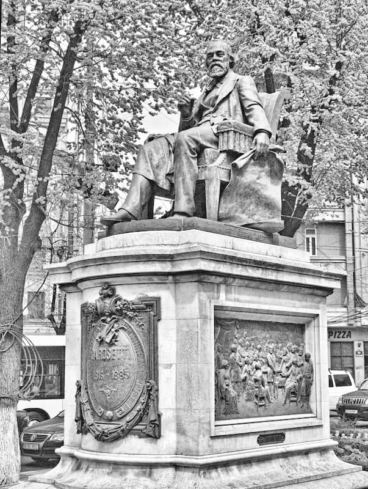

„Ceea ce se cuvine a constata este că la `48, cînd rumînii munteni rupseră un minut jugul strein, rumînii și israeliții se uniră și deschiseră împreună inimile lor la speranța unui viitor fericit pentru toți. Dar adevărul, dreptatea și fericirea israeliților mă silește a spune că Constituția de la 1848 era vătămătoare lor. Frații noștri israeliți nu trebuie să ținte la dobîndirea unei libertăți civile acordate lor ca la niște fii ai României, ci la dobîndirea drepturilor legitime ca corp de nație. Ce priveliște mai sublimă și unică decît a cestor doi populi trăind seculi întregi numai pe temelia nestrămutată a legii? Israil pe Decalog, Roma pe cele 12 table. Ce priveliște mai sfîntă, admirată de lumea întreagă, decît rumînii de la Dunăre păstrînd viața și credința lor printre năvăliri secularii, precum și israeliții printre izgoniri și chinuri de tot felul?”
„În sfîrșit (scrie undeva Iorga Nicolae), pe primăvară (în 1848), sosiră din Paris tineri studenți aparținînd clasei boierești mijlocii, care nu voiau să creadă într-o îngrădire în spațiu a revoluției franceze. Unul dintre ei, C. A. Rosetti, credea realizabilă în cel mai apropiat viitor o înfrățire idilică a tuturor oamenilor.”
Așa este, de la Paris a venit ciuma franțuzească a '48-ului, împreună cu sifilisul. Și iată ce odă pentru Franța delira junele patriot Rosetti într-una din nenumăratele sale bolnave scrisori:
„Francia s-a ridicat și Europa întreagă s-a ridicat la vocea ei. Libertatea s-a ivit din sînul Franciii, ca zeii lui Homer din înălțimile Olimpului, și a făcut ocolul lumei. Piciorul ei s-a pus pe pămîntul nostru… Piciorul ei s-a pus și iată că pămîntul s-a cutremurat, un fior a străbătut de pe marginile rîurilor sale pînă în vîrful munților - fără turburări, fără zguduiri, fără sfîșieri, fără ca sîngele să fi curs - ca prin farmec. Opera întunericului a reintrat în umbră, opera de lumină și divină s-a arătat oamenilor: «Lux fiat et lux facta est!» Toată nădejdea noastră este în a doua noastră patrie. Și aceasta este adevăr. Tot românul are două patrii: mai întîi pămîntul pe care s-a născut, apoi Francia. Francia ne-a crescut, ne-a instruit; scînteia care a strălucit asupra țării noastre am luat-o din focarul ei. Mai amintește Franciei că suntem fiii săi, că am combătut pentru ea pe baricade. Adaugă că ceea ce am făcut, l-am făcut după exemplul ei și că suntem ante-garda ei în partea Rusiei.”
Și, într-adevăr, din Franța a plecat atunci lumina întunecată (luciferică) a răzvrătirii masonice și a început să se pună în lucrare planul Templului Ideal al Popoarelor, al Statelor Unite ale Lumii, într-un cuvînt al împărăției Antihristului. Iar frații cei tineri și ușori la minte năluceau aievea frumoasa lucrare, precum mărturisește luptătorul pentru libertate Rosetti, cu jurămînt:
„Hotărîsem să nu mor pînă ce voi vedea Republica Universală!”
Republică a toată lumea care urma să se facă punînd numaidecît în faptă dogmele Frăției Masonice:
„Revoluția de la 1848 — zicea gîngavul viitor ministru al Instrucțiunii Publice, acest C. A. Rosetti de jalnică amintire — este acția, dezvoltarea și punerea în lucrare a dreptății, a căria fii sînt libertatea, egalitatea și frăția, care sînt toate cuprinse în sufragiul universal, și ale căria arme puternice sînt solidaritatea popolilor, care este frăția și egalitatea simțită în toată întinderea ei acum de toată lumea, proclamată pe baricadele Romei, ale Veneției, ale Vienii și-ale Ungariei și consacrată cu sîngele martirilor ce se varsă pe toată ziua pentru mîntuirea neamului omenesc.”
Pentru aceasta, prin proclamațiile sale, „apostolul” nenorocirilor ce aveau să vină îi chema la luptă armată împotriva negrei „reacții” pe toți „fiii patriei”:
„Cetățeni în general, preoți, boeri, ostași, neguțători, meseriași de orice treaptă, de orice religie, ce vă aflați în capitală și prin orașe: greci, sîrbi, bulgari, germani, armeni, israeliți, armați-vă spre a ține buna orînduială și a ajuta la fapta cea mare! Patria noastră e și a voastră. Vouă vă place a șede într-însa și ea vă primește. De azi înainte, o masă avem cu toții, un ospăț de frăție ni se întinde, aceleași drepturi vom avea cu toții!”
Și - fiindcă „cetățenii în general” fugiseră (de teama pușcilor turcești, na!) de la „masa” jafului pregătită de obște tuturor scursurilor și zoaielor Europei – Rosetti sufla din nou în trompeta de tinichea a Frăției, ca să adune iarăși haita:
„Dreptate! Frăție! Cetățeni, de ce v’ați tras în casele voastre? De ce mîna voastră cea tare și tînără a lăsat pușca biruinței? Români, pînă ce cîmpul bătăliei nu se curăță de toți vrăjmașii [adică de Românii băștinași], chiar și de trupurile lor [erau și sîngeroși frații!], și pînă ce iarba și florile nu cresc pe dînsul, soldatul nu trebuie să lase arma.
Tineri români, negustori virtuoși, frați israeliteni, soldați tari și puternici ai gardei naționale! Sculați, deșteptați în voi patriotismul, aș putea zice chiar și eroismul și păziți iarăși orașul precum l-ați păzit atunci [la 11 Iunie '48]!” (Proclamațiune a lui Rosetti)
Nu știm dacă „inimicii” revoluției – adică tîrgoveții și negustorii Români din București, cîți vor fi fost - își doreau cu dinadinsul „libertatea” cea nouă. Ce cunoaștem cu siguranță e că nici în ruptul capului nu se gîndeau la vreo „egalitate” cu țigănimea balcanică sau autohtonă și cu atît mai puțin la „înfrățirea” cu borfașii Galiției, acei Evrei plesniți de-a călare cu latul sabiei și așa fugăriți afară din hotarele Rusiei de cazacii bine-credinciosului Țar Nicolae pînă ce i-au văzut trecuți în primitoarele Țări Românești; la fel, nici cu aceia alungați din Austria pentru pricini una și una mai penală (Rosetti el însuși, de pildă, era tovarăș la parte cu un Evreu hăituit din Austria pentru fabricarea de bani calpi, pe a cărui tiparniță „patriotul” nostru își publica de altfel proclamațiile și ziarul R(r)omânul.) Așa încît – atunci cînd zavera a biruit desăvîrșit și ca urmare s-a încercat pentru întîia oară încetățenirea la noi cu drepturi depline a tuturor lepădăturilor lumii (la 1880, prin revizuirea articolului 7 din Constituția Principatului România) – din pricina aceasta au ieșit oarecari tulburări neplăcute pentru Evrei. (Românii, se zice, au ars sinagoga din București. Nu vom afla niciodată dacă nu cumva Evreii înșiși au pus focul, dar știm negreșit că le-a priit, fiindcă așa-zisul rege Carol I împreună cu Brătianu ăl bătrîn au zidit-o la loc din piatră și cu banii Românilor plătitori de taxe și impozite.) Ei, și frecușurile astea pe marginea ziselor chichițe constituționale amenințau așadar să poticnească bunul mers al „înfrățirii” celor două popoare. Și atunci ce face bunul Rosetti? Scrie la gazetă o chemare la pace care ar putea mișca și pietrele (de rîs, dacă n-ar fi de cel mai jalnic plîns):
„D-aceea dar, mi se pare că-n acest minut, cînd din amețeala luptei se pot isca multe neînțelegeri, îmi va fi iertat a face în coloanele acestui jurnal [„Steaua Dunării”, omonimul Lojei francmasonice] un apel către rumîni și israeliți. Ceea ce văz, cu cea mai deplină durere, este ciocnirea ce se făcu din nenorocire între rumîni și israeliți, și pe care voiesc a o curma interpuind inima mea între amîndouă părțile. Lupta iscată între rumîni și israeliți nu poate folosi decît inimicilor nației rumîne și israelite. Cei cari au suferit împreună se cuvine, mai cu seamă în asemenea împrejurări critice, nu a se lovi unii pe alții, ci din contra, a se susține. Astfel și numai astfel poate veni fericirea și salvarea comună.
Deși în ochii unora este o mare osebire între israeliți și rumîni, cei cari se uită-n fundul istoriei vor vedea că sînt două ginte mari înaintea lui Dumnezeu. Căci - dacă cei dintîi sînt fiii celui care luptă cu Domnul, «ișol» (demon, adversar, dușman) și fur-aleși spre a conduce populii la conchista [cucerirea] cerurilor - ceilalți suntem fiii celora [Romanii] carii avură misia d-a domni lumea: «Tu mundum regere memento!» [«Amintește-ți că împărățești lumea!»] Cînd dar fiii Romii și fiii Ierusalimului pot fi d-opotrivă mîndri de originea lor, alianța este lesne de făcut. Cei d-opotrivă se pot iubi și uni cu mai multă lesnire.
Deci seculii ne făcură frați, frați prin misie, frați prin suferințe. Fiecare trebuie să simță trebuința acestii prescripții a iubirii, căci toți am fost sclavi pe pămîntul șărbiei. Țara rumînilor este astăzi într-un minut de căpetenie. Cei carii speră a ei trunchiere și pîndesc cu lăcomire minutul împărțirei se-ncearcă și se vor sili a dezbina pe locuitorii ei. Aceste suferințe ale rumînilor, la noi ca și pretutindenea, nu le-au produs israeliții. Ele sînt urmarea neapărată a năvălirei streinilor [Rușii, care ocupaseră Principatul tocmai fiindcă erau împotriva încetățenirii străinilor] ș-a perderii idealului nostru. Ceea ce se cuvine a constata este că la '48, cînd rumînii munteni rupseră un minut jugul strein [al Turcilor, ca suzerani; și al Rușilor, ca protectori împotriva năvălirii barbarilor Apuseni], rumînii și israeliții se uniră și deschiseră împreună inimile lor la speranța unui viitor fericit pentru toți. Dar adevărul, dreptatea și fericirea israeliților mă silește a spune că Constituția de la 1848 era vătămătoare lor. Frații noștri israeliți nu trebuie să ținte la dobîndirea unei libertăți civile acordate lor ca la niște fii ai României, ci la dobîndirea drepturilor legitime ca corp de nație [adică ticălosul voia un stat „doi în unu” româno-iudeu!]. Ce priveliște mai sublimă și unică decît a cestor doi populi trăind seculi întregi numai pe temelia nestrămutată a legii? Israil pe Decalog, Roma pe cele 12 table. Ce priveliște mai sfîntă, admirată de lumea întreagă, decît rumînii de la Dunăre păstrînd viața și credința lor printre năvăliri secularii, precum și israeliții printre izgoniri și chinuri de tot felul?
Să rumpem dar cu toții pîinea înfrățirei, și pentru aceasta sfîrșesc zicînd israeliților: Rămîneți credincioși nației voastre! Primiți de la noi ospitalitatea, libertatea și tot ce dorim și noi a găsi pe pămînt strein, unde suntem emigrați. Drepturile noastre să fie negreșit ș-ale voastre pe cît cere dreptatea. Dar și voi nu uitați că pentru ca să vă putem da libertatea, trebuie mai întîi s-avem noi înșine, că pentru a dovedi că voiți frăția, trebuie să ne ajutați, și mai cu seamă astăzi, cu inima, cu mintea, cu punga și la trebuință cu brațul vostru. Nu uitați asemenea mai cu seamă voi, cei veniți de curînd și pe furiș [mulți grozav, vezi statistica lui Eminescu!], că-n ziua ce veți deveni instrument activ sau pasiv chiar al inimicilor noștri, dreptatea cere a vă lepăda din sînul nostru, mai cu seamă în Moldavia unde numărul vostru cel nou.”
E limpede? Cred că e cea mai bună, în înțelesul de mîrșavă, pagină din întreaga noastră murdată istoriografie și covîrșește de departe orice urîciune de acest fel scrisă în zilele noastre. Ce să-i faci însă? Omul nostru, „cărturarul” neștiutor de română Rosetti, avea și el o patimă pentru „cei veniți de curînd și pe furiș”, patimă pe care i-o și mărturisea fratelui Brătianu:
„Dar cum o să ți se pară, cînd ți-oi spune că sînt piste 3 luni de cînd nu mă pot vindeca de dorința ce am d-a studia 3, 4 ani ș-a scrie… Ghici…? Istoria ovreilor, revoluționară și literară (2 volume). Ce ai cu ovreii? - o să-mi zici? Așa îmi zic și eu și nu pot găsi alt nimic decît că-mi sînt dragi.”
Marea dragoste a naționalistului nostru (căci doar avea zisul ziar R(r)omânul!) pentru lăcustele alogene s-a arătat și cu fapta, căci iată cum se lăuda:
„Văzînd că nu pot să fac nimic cu miniștrii noștri, am deschis în '59 o subscripție în ziarul meu, după titlul: Subscripție națională pentru ridicarea unui monument în onoarea tuturor străinilor cari au apărat cauza națională.”
Să adăugăm la urma acestei grețoase laudatio cea mai limpede proorocie a „bulbucaților ochi de broască”, iar mai bine zis a Broscoiului însuși:
„Times scria acum un an că [numai ce o] să cază Austria și o să dea [cine o să dea?] Dunărea pînă la Marea Neagră maghiarilor, căci ei o vor deschide-o comerciului și industriei engleze. Nu se poate! Noi și numai noi – zău! - putem împăca totul [adică gîlcevile din Marile Loje] și numai prin noi comerciul și industria engleză (franceză) pot avea această Californie, aceste Indii ale Europei etc., etc.”
„…această Californie (începuse nebunia aurului în California-California), aceste Indii ale Europei” erau locul de sub soare pe care ne-am învățat, greșit, să-l numim „România”. Care - în vremea numitului Rosetti C. A., ca și acum - era un tărîm al făgăduinței: bogat, cu blîndă și frumoasă așezare, populat de aborigeni pașnici și bucuroși să fie stăpîniți, batjocoriți și tîlhăriți pînă la piele de fețele mai mult sau mai puțin palide venite pe aripile vîntului cu O. Z. N.-urile „civilizației”, „culturii” și „progresului”. Și așa, azi ne-am trezit (nu numai noi, ci toată omenirea) în dimineața zilei de alaltăieri. Căci cele proorocite aproape s-au împlinit: „Îngerul […] și-a ridicat mîna dreaptă către cer și s-a jurat: Timp nu va mai fi!” (Apocalipsa 10:6)

AXA AFIRMĂ – NU RĂSTĂLMĂCEȘTE ȘI NU ÎȘI ÎNCHIPUIE
Comentarii